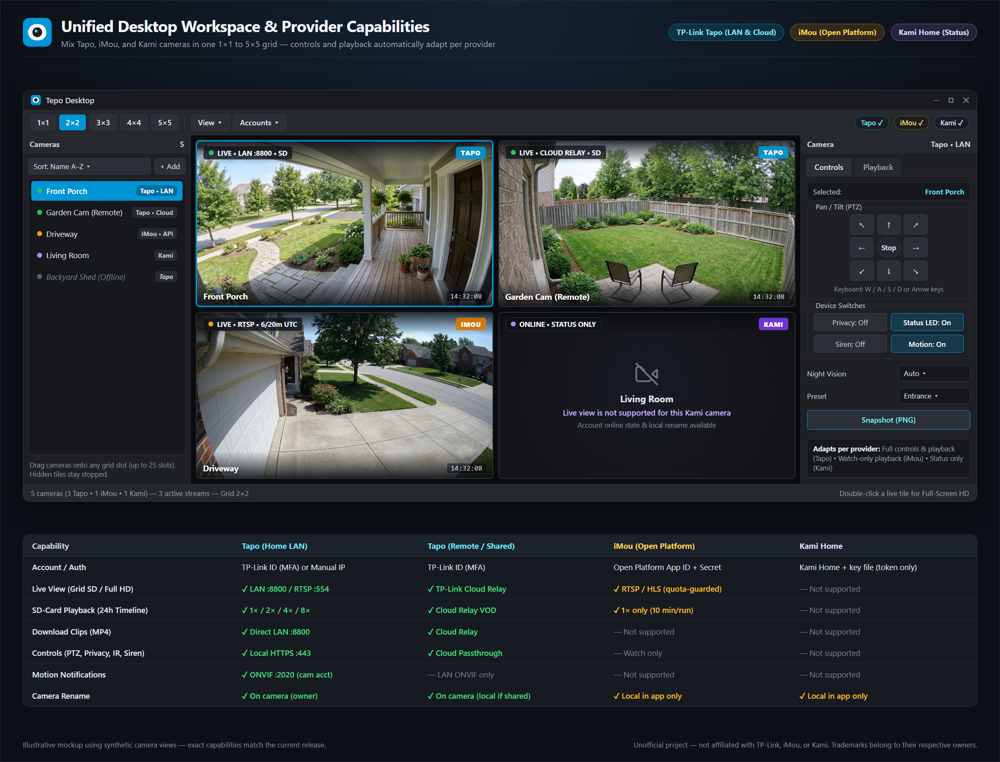

Tepo Desktop
Ứng dụng Windows không chính thức giúp hiển thị các camera an ninh của bạn trong một cửa sổ duy nhất: lưới từ 1×1 đến 5×5, xem toàn màn hình và trình phát bản ghi trên thẻ nhớ.
Không chính thức. Tepo Desktop là dự án độc lập, không do TP-Link, Kami hay iMou phát triển, phê duyệt hay hỗ trợ. Tapo, TP-Link, Kami và iMou là nhãn hiệu của chủ sở hữu tương ứng, chỉ được nhắc đến nhằm mô tả các camera và tài khoản mà ứng dụng có thể làm việc cùng.
Khả năng hỗ trợ theo từng tài khoản

| Tài khoản | Tính năng hỗ trợ | Hướng dẫn |
|---|---|---|
| TP-Link Tapo (LAN & Cloud) | Hỗ trợ đầy đủ: xem trực tiếp tại nhà (LAN) và từ xa / camera chia sẻ (Cloud Relay), điều khiển PTZ & thiết bị, xem lại thẻ nhớ 24 giờ (1x–8x và tải MP4), chụp ảnh nhanh, thông báo chuyển động và đổi tên. |
Đăng nhập Tapo |
| iMou (Open Platform) | Chỉ xem: xem trực tiếp (RTSP / HLS) và phát lại thẻ nhớ tốc độ 1x, có giới hạn phút mỗi ngày & giới hạn luồng chạy đồng thời; chỉ đổi tên cục bộ. Không tải video và không điều khiển camera. |
Đăng nhập iMou |
| Kami Home | Chỉ đăng nhập tài khoản, hiển thị danh sách camera, trạng thái online/offline, sắp xếp và đổi tên cục bộ. Không hỗ trợ xem trực tiếp, bản ghi hay điều khiển. | Đăng nhập Kami |
Cách hoạt động giữa các hãng

- TP-Link Tapo: Tự động tìm camera trong mạng nội bộ (
TDPUDP20002/20004), điều khiển quaHTTPS :443nội bộ (TPAP / SPAKE2+hoặc Secure v3, tự động lấy Local Access Token khi cần), và phát trực tiếp / xem lại qua cổng:8800(HKDF/AES) hoặcRTSP :554kèm cảnh báo chuyển độngONVIF :2020. Camera ở xa và camera được chia sẻ tự động đi qua TP-Link Cloud Relay và Cloud Passthrough. - iMou (Open Platform): Kết nối tới
open.imoulife.com(sg,fkhoặcor) bằng App ID và App Secret từ tài khoản nhà phát triển miễn phí của chính bạn mà không lưu mật khẩu iMou. Xem trực tiếp dùngRTSPtạm thời (hoặc cloudHLSdự phòng, tự hủy khi dừng) và xem lại thẻ nhớ theo yêu cầu ở tốc độ1x(record.file.list, giới hạn 10 phút mỗi lượt; tạm dừng sẽ ngắt luồng), được bảo vệ bằng định mức phút hằng ngày (mặc định 20 phút/camera/ngày UTC), giới hạn 2 luồng đồng thời, tự dừng khi ẩn hoặc thu nhỏ và danh sách API chỉ-đọc nghiêm ngặt. - Kami Home: Đăng nhập qua cổng cloud khu vực của Kami (
v4/users/login,v5/devices/list) bằng tệp khóa do người dùng tự cung cấp, gửi 1 lần duy nhất mỗi lượt bấm (khóa 120 giây nếu sai) và chỉ lưu session token trong DPAPI để hiển thị danh sách camera cùng trạng thái online/offline với tùy chọn đổi tên cục bộ.
Cài đặt
Cần Windows 10 hoặc 11 (64-bit). Tải một trong hai tệp sau tại trang Releases trên GitHub của dự án:
TepoDesktop-0.1.0-setup.exe: bộ cài đặt cho riêng tài khoản Windows hiện tại, không cần quyền quản trị viên. Hỗ trợ tạo lối tắt Desktop và tự khởi động cùng Windows.TepoDesktop-0.1.0-win64.zip: giải nén ở bất kỳ đâu và chạyTepoDesktop\TepoDesktop.exe, không cần cài đặt.
Bộ giải mã video (FFmpeg) đã được đóng gói sẵn. Bản phát hành chưa có chữ ký số (code signing), vì vậy Windows SmartScreen có thể hiện cảnh báo trong lần chạy đầu tiên.
Trình lọc web và chặn quảng cáo. Các phần mềm như AdGuard có thể chặn hoặc can thiệp lưu lượng HTTP thuần từ máy tính của bạn, kể cả kết nối tới chính camera trong nhà. Điều này có thể làm lỗi xem trực tiếp và tải video từ camera Tapo nội bộ. Hãy thêm ngoại lệ cho TepoDesktop.exe và ffmpeg.exe trong phần cài đặt của trình lọc web (ngoại lệ cho tên chương trình cũ sẽ không tự áp dụng sang tên mới).
Lần chạy đầu tiên
- Khởi động ứng dụng. Cửa sổ sẽ hỏi đăng nhập TP-Link ID. Chọn Use without account (Dùng không cần tài khoản) nếu bạn chỉ muốn thêm camera theo IP hoặc chỉ dùng Kami / iMou.
- Camera Tapo xuất hiện với tên bạn đã đặt trong ứng dụng Tapo. Các camera đang hiển thị trên mạng nội bộ phát trực tiếp qua LAN, còn camera ở xa hoặc camera được chia sẻ phát qua TP-Link cloud relay.
- Với Kami hoặc iMou, mở nút tài khoản ở thanh công cụ phía trên và làm theo trang hướng dẫn tương ứng.
- Xem Hướng dẫn sử dụng để biết cách dùng lưới camera, toàn màn hình, bản ghi, đổi tên, khay hệ thống và thông báo.
Dữ liệu của bạn
Mật khẩu và khóa truy cập được lưu bằng cơ chế bảo vệ dữ liệu của Windows (DPAPI), nên chỉ tài khoản Windows của bạn mới đọc được. Cấu hình và nhật ký nằm trong %APPDATA%\TapoDesktop. Tên thư mục này được giữ nguyên từ các phiên bản cũ để không làm mất cấu hình và tài khoản đã đăng nhập. Xem thư mục dữ liệu.
Những tính năng chưa hỗ trợ
- Đàm thoại hai chiều và âm thanh khi xem trực tiếp chưa được xây dựng.
- Không hỗ trợ xem video trực tiếp và xem bản ghi với camera Kami.
- Không hỗ trợ tải bản ghi, tua nhanh và điều khiển camera với iMou.